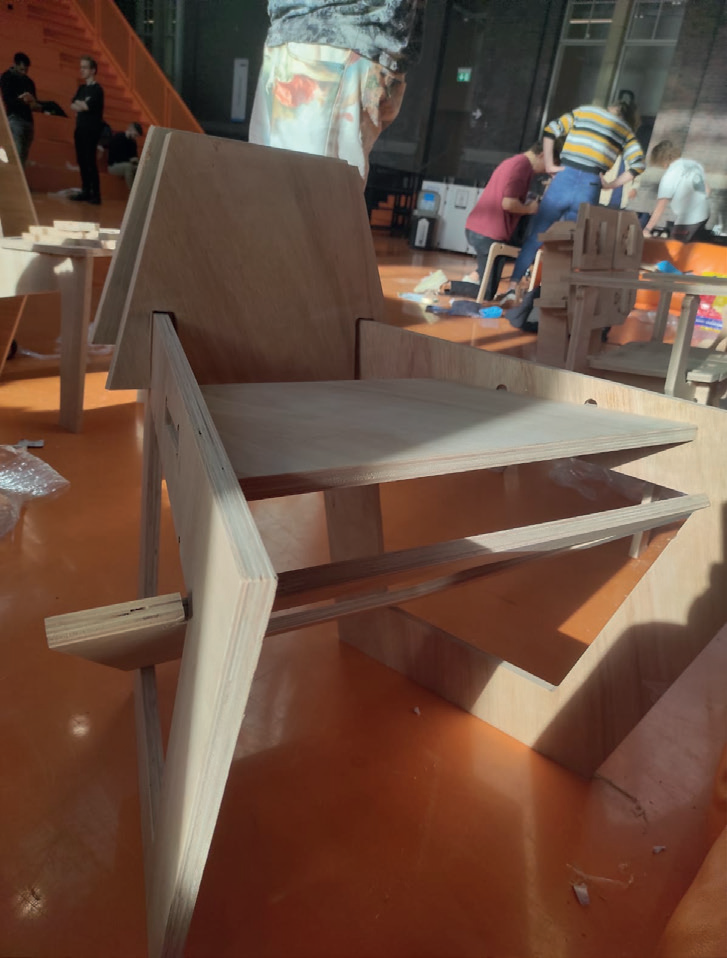

Assignment 2: CNC chair
As mentioned in the introduction the second assignment was to design ‘something to sit on’ from a single piece of plywood (18 x 1220 x 1220 mm) that could be fully assembled without the use of any screws and bolts, relying solely on friction-fit connections. The challenge was to create something sturdy enough to support a person while maximizing material efficiency.We worked closely together with The New Makers who have designed their own modular prefab housing units using CNC technology. They also have their own furniture brand called fabrikoos who just like the assignment create furniture with fiction fit connections. They helped us through the process of going from a design to a 1:1 prototype by providing us with their large CNC-routers and advice on how to best go about designing for something like this through digital fabrication. This experience sparked my passion for CNC machining and digital fabrication, especially working with wood, and deepened my interest in digital and modular architecture.
For my own design, I again used Rhino to explore many design iterations but also created a few physical models from a few scraps of cardboard to get a better idea of what I wanted as well as sketched some ideas and reference a few other similar projects. Eventually I stumbled upon a form I liked for the chair but realized that cutting it out of one slice of plywood was not going to happen as I used too much material as well as the fact that the connections were quite hard to make as they were angled. So from there I changed the approach to instead create a design for a chair that reused the cut-out shapes for the chair and used simpler connections.



Of course this was just the first prototype, so there’s definitely room for improvement. For example, for example I could’ve rounded off the edges at the ends as those revealed to be quite sharp. The seat was also a bit too high, as I based the dimensions on my own measurements, making it comfortable but not necessarily a lounge chair like I had envisioned. But that is what prototypes are for to see if what you designed on paper or digitally actually works in reality like you thought or if there is something you missed. And despite these issues, I really love the chair’s form and design. I used it in my room for quite a while, and now that I’ve moved to a smaller space, it’s disassembled and tucked away in a corner. Its ability to be easily taken apart and stored flat makes it perfect for saving space until I have room again.